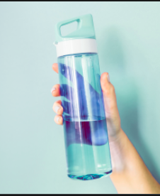
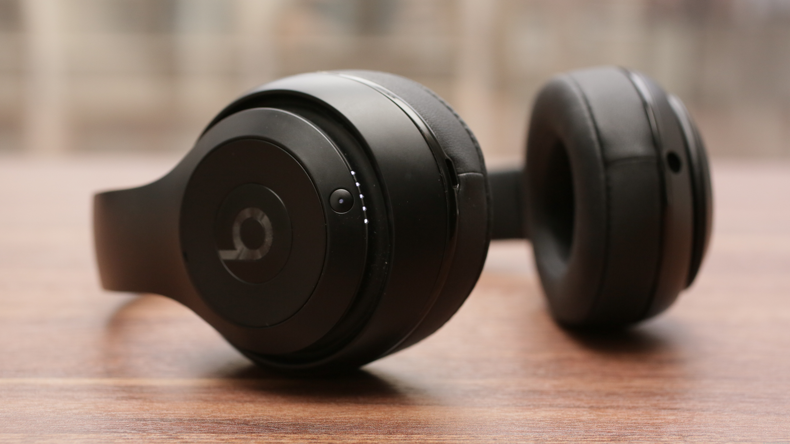

Case Study - Google Lens vs. Mobile Net

Output on Google Lens: Waterbottle
Output on MobileNet Model: Waterbottle
Both are accurate.
Output on Google Lens: Canvas Shoes
Output on MobileNet Model: Running Shoes
Google Lens is more accurate.

Output on Google Lens: Headphones
Output on MobileNet Model: Microphone, Mike
Google Lens is more accurate.
Output on Google Lens: Bed, Pillow
Output on MobileNet Model: Bathtub, tub
Google Lens is more accurate.
I have tested 4 images.
Google Lens predicted all of the images accurately, while MobileNet only predicted
one.
So, according to the case study, Google Lens is more accurate.